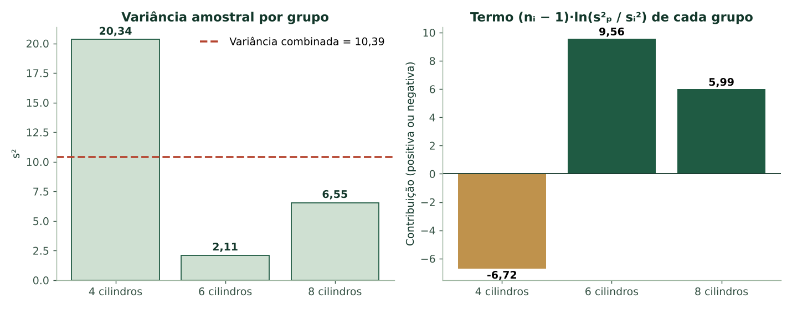
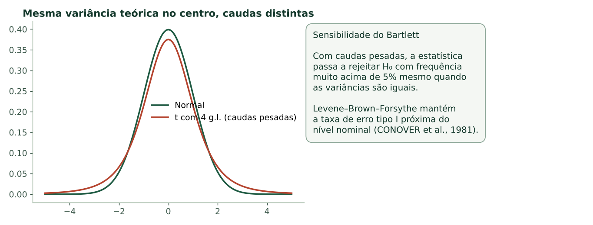

Bartlett
Compara as variâncias de diferentes grupos quando a normalidade é plausível.
Comece por aqui
O teste de Bartlett verifica se vários grupos têm a mesma variância. Ele é o mais potente quando os dados são realmente normais, mas, em contrapartida, é muito sensível quando não são: nesse caso, pode rejeitar a igualdade de variâncias simplesmente porque a forma da distribuição não é normal.
O que é o teste
Bartlett (1937) comparou a variância combinada \(s_p^2\) com as variâncias de cada grupo. Se todas fossem iguais, \(\ln s_p^2\) e a média ponderada de \(\ln s_i^2\) coincidiriam; a estatística mede a diferença entre elas.


Pressupostos e como verificá-los
| Pressuposto | Como verificar |
|---|---|
| Normalidade em cada grupo | Q–Q por grupo e shapiro.test() em cada um. Para n pequeno, o teste tem baixo poder: confie no gráfico. |
| Observações independentes | Delineamento do estudo |
| Variável quantitativa | Tipo de variável |
| Pelo menos 2 observações por grupo | table(fator) |
Prefira o Levene–Brown–Forsythe ou o Fligner–Killeen. Um resultado significativo no Bartlett pode refletir apenas a não normalidade.
Hipóteses e estatística de teste
Em que:
- \(K^2\)
- estatística de Bartlett; sob H₀ segue aproximadamente \(\chi^2_{k-1}\)
- \(k\)
- número de grupos
- \(N\)
- total de observações
- \(n_i,\ s_i^2\)
- tamanho e variância amostral do grupo i
- \(s_p^2\)
- variância combinada (média ponderada das variâncias)
Exemplo numérico, passo a passo (mtcars: mpg por cilindros)
| Cilindros | n | Média | Mediana | DP | Variância |
|---|---|---|---|---|---|
| 4 | 11 | 26,66 | 26,0 | 4,510 | 20,339 |
| 6 | 7 | 19,74 | 19,7 | 1,454 | 2,113 |
| 8 | 14 | 15,10 | 15,2 | 2,560 | 6,554 |
Variância combinada: \[\begin{aligned}s_p^2 &= \dfrac{10(20{,}339)+6(2{,}113)+13(6{,}554)}{29} \\ &= 10,3884.\end{aligned}\]
Numerador: \[\begin{aligned}&29\ln(10,388)-[10\ln 20{,}339 \\ &\quad +6\ln 2{,}113+13\ln 6{,}554] \\ &= 8,8258.\end{aligned}\]
Denominador (fator de correção): \(1+\frac{1}{6}\left(\frac{1}{10}+\frac{1}{6}+\frac{1}{13}-\frac{1}{29}\right)=1,0515\).
\(K^2=8,8258/1,0515=8,3934\), com 2 g.l. ⇒ \(p=0,01505\).
Propriedades e valor-p
- \(K^2\geq 0\) e é igual a zero quando todas as variâncias amostrais são iguais.
- O valor-p é \(P(\chi^2_{k-1}\geq K^2)\) (unilateral à direita).
- É o teste mais potente quando os dados são normais, e o mais sensível a desvios dela.
- Não há intervalo de confiança usual para \(K^2\). Intervalos para razões de variâncias dependem de \(F\) (apenas dois grupos) ou de bootstrap.
Como interpretar os resultados
| Resultado | Leitura | Cuidado |
|---|---|---|
| p < 0,05 | Variâncias diferentes, ou dados fora da normalidade. | Verifique a normalidade e confirme com Levene–Brown–Forsythe. |
| p ≥ 0,05 | Sem evidência suficiente de diferença entre as variâncias. | Não prova igualdade. |
Reporte \(K^2\), os graus de liberdade e o valor-p.
Como executar no R e em Python
Onde executar o código em Python
Não é preciso instalar nada: o Google Colab é um computador na nuvem, gratuito, que executa Python pelo navegador e já traz as bibliotecas usadas aqui (numpy, scipy e matplotlib).
bartlett.test() está no pacote stats, já instalado com o R.
bartlett.test(mpg ~ factor(cyl), data = mtcars)
Exemplo de aplicação
Contexto dos dados
Com o mesmo objetivo da ficha de Levene (comparar o consumo entre carros de 4, 6 e 8 cilindros), verificamos agora a homogeneidade de variâncias pelo Bartlett, depois de checar a normalidade em cada grupo.
Código em R
# Bartlett: exemplo completo ----
# Pacote: apenas o stats (já vem com o R).
# 1. Dados
dados <- mtcars
dados$cil <- factor(dados$cyl)
tapply(dados$mpg, dados$cil, var)
# 2. Normalidade dentro de cada grupo (condição do teste)
tapply(dados$mpg, dados$cil, function(v) shapiro.test(v)$p.value)
# 3. Teste de Bartlett
bartlett.test(mpg ~ cil, data = dados)
# 4. Cálculo manual da estatística
ni <- table(dados$cil); vi <- tapply(dados$mpg, dados$cil, var)
N <- sum(ni); k <- length(ni)
sp2 <- sum((ni - 1) * vi) / (N - k) # variância combinada
num <- (N - k) * log(sp2) - sum((ni - 1) * log(vi))
den <- 1 + (1 / (3 * (k - 1))) * (sum(1 / (ni - 1)) - 1 / (N - k))
K2 <- num / den
c(sp2 = sp2, K2 = K2, valor_p = pchisq(K2, df = k - 1, lower.tail = FALSE))
# 5. Gráfico das variâncias
barplot(vi, col = "gray85", ylab = "Variância", xlab = "Cilindros")
abline(h = sp2, col = "red", lwd = 2, lty = 2)
A mesma análise em Python, com os resultados
Cole o código em um notebook do Google Colab ↗ e execute com Shift+Enter. Os valores abaixo são a saída desse código.
# Bibliotecas: numpy, scipy e matplotlib (já instaladas no Google Colab)
import numpy as np
from scipy import stats
import matplotlib.pyplot as plt
mpg = np.array([21, 21, 22.8, 21.4, 18.7, 18.1, 14.3, 24.4, 22.8, 19.2, 17.8, 16.4, 17.3, 15.2, 10.4, 10.4, 14.7, 32.4, 30.4, 33.9, 21.5, 15.5, 15.2, 13.3, 19.2, 27.3, 26, 30.4, 15.8, 19.7, 15, 21.4])
cyl = np.array([6, 6, 4, 6, 8, 6, 8, 4, 4, 6, 6, 8, 8, 8, 8, 8, 8, 4, 4, 4, 4, 8, 8, 8, 8, 4, 4, 4, 8, 6, 8, 4])
disp = np.array([160, 160, 108, 258, 360, 225, 360, 146.7, 140.8, 167.6, 167.6, 275.8, 275.8, 275.8, 472, 460, 440, 78.7, 75.7, 71.1, 120.1, 318, 304, 350, 400, 79, 120.3, 95.1, 351, 145, 301, 121])
# 1. Variâncias por grupo
g = [mpg[cyl == c] for c in (4, 6, 8)]
ni = np.array([len(v) for v in g]); vi = np.array([v.var(ddof=1) for v in g])
print("Variâncias (4, 6, 8 cilindros):", np.round(vi, 4))
# 2. Normalidade dentro de cada grupo
for c, v in zip((4, 6, 8), g):
W, p = stats.shapiro(v)
print(f"Shapiro-Wilk ({c} cil.): W = {W:.4f}, p-valor = {p:.4f}")
# 3. Teste de Bartlett
res = stats.bartlett(*g)
print(f"\nBartlett: K² = {res.statistic:.4f}, gl = 2, p-valor = {res.pvalue:.5f}")
# 4. Cálculo manual da estatística
N = ni.sum(); k = len(ni)
sp2 = np.sum((ni - 1) * vi) / (N - k) # variância combinada
num = (N - k) * np.log(sp2) - np.sum((ni - 1) * np.log(vi))
den = 1 + (1 / (3 * (k - 1))) * (np.sum(1 / (ni - 1)) - 1 / (N - k))
K2 = num / den
print(f"sp² = {sp2:.4f} | numerador = {num:.4f} | denominador = {den:.4f} | K² = {K2:.4f} | p = {stats.chi2.sf(K2, k - 1):.5f}")
# 5. Gráfico das variâncias
plt.bar(["4", "6", "8"], vi, color="lightgray", edgecolor="gray")
plt.axhline(sp2, color="red", linestyle="--"); plt.ylabel("Variância"); plt.xlabel("Cilindros"); plt.show()
Resultados da execução
Variâncias (4, 6, 8 cilindros): [20.3385 2.1129 6.5538] Shapiro-Wilk (4 cil.): W = 0.9124, p-valor = 0.2606 Shapiro-Wilk (6 cil.): W = 0.8990, p-valor = 0.3252 Shapiro-Wilk (8 cil.): W = 0.9318, p-valor = 0.3229 Bartlett: K² = 8.3934, gl = 2, p-valor = 0.01505 sp² = 10.3884 | numerador = 8.8258 | denominador = 1.0515 | K² = 8.3934 | p = 0.01505
Leitura: a normalidade em cada grupo não é rejeitada (p = 0,261; 0,325; 0,323), embora com n pequeno o poder seja baixo. O Bartlett rejeita a igualdade de variâncias (\(K^2=8,393\), p = 0,0150), o que é coerente com o Levene–Brown–Forsythe (p = 0,0094). A conclusão é a mesma nos dois testes: o consumo é mais variável entre os carros de 4 cilindros.
Erros comuns
| Erro | Como evitar |
|---|---|
| Usar o Bartlett sem checar a normalidade | Verifique Q–Q por grupo ou use Levene–Brown–Forsythe. |
| Interpretar rejeição como prova de variâncias diferentes | Pode refletir apenas não normalidade. |
| Usar como “porteiro” para ANOVA | Prefira Welch por padrão. |
| Aplicar a dados dependentes | Use modelos mistos ou GEE. |
Alternativas e fluxo de trabalho
| Procedimento | Quando preferir |
|---|---|
| Levene–Brown–Forsythe | Normalidade duvidosa; padrão mais seguro. |
| Fligner–Killeen | Dados assimétricos ou com outliers. |
Teste F para duas variâncias (var.test) | Dois grupos e normalidade plausível. |
| ANOVA de Welch | Quando se quer dispensar a homogeneidade de variâncias. |
- Cheque a normalidade em cada grupo.
- Se plausível, use Bartlett; senão, Levene–Brown–Forsythe.
- Se rejeitar, use Welch ou modelo com variância heterogênea.
Referências desta ficha
- BARTLETT, Maurice S. Properties of sufficiency and statistical tests. Proceedings of the Royal Society of London. Series A, v. 160, n. 901, p. 268-282, 1937.
- CONOVER, William J.; JOHNSON, Mark E.; JOHNSON, Myrle M. A comparative study of tests for homogeneity of variances, with applications to the outer continental shelf bidding data. Technometrics, v. 23, n. 4, p. 351-361, 1981.
- SNEDECOR, George W.; COCHRAN, William G. Statistical methods. 8. ed. Ames: Iowa State University Press, 1989.
- HENDERSON, Harold V.; VELLEMAN, Paul F. Building multiple regression models interactively. Biometrics, v. 37, n. 2, p. 391-411, 1981. (Conjunto de dados
mtcars, pacotedatasetsdo R.) - R CORE TEAM. R: a language and environment for statistical computing. Vienna: R Foundation for Statistical Computing, 2026. Disponível em: https://www.r-project.org/.
- POSIT TEAM. RStudio: integrated development environment for R. Boston: Posit Software, PBC. Disponível em: https://posit.co/download/rstudio-desktop/.
- VIRTANEN, Pauli et al. SciPy 1.0: fundamental algorithms for scientific computing in Python. Nature Methods, v. 17, p. 261-272, 2020. DOI: 10.1038/s41592-019-0686-2. (Funções do módulo
scipy.stats.) - HARRIS, Charles R. et al. Array programming with NumPy. Nature, v. 585, p. 357-362, 2020. DOI: 10.1038/s41586-020-2649-2.
- HUNTER, John D. Matplotlib: a 2D graphics environment. Computing in Science & Engineering, v. 9, n. 3, p. 90-95, 2007.
- GOOGLE. Google Colaboratory. Disponível em: https://colab.research.google.com/.
- As figuras desta ficha foram elaboradas pelo autor.

Prof. Dr. Cássius Henrique Xavier Oliveira
Professor · ICTIN/UFLA · Estatística, Confiabilidade e Ciência de Dados.
Conheça minha trajetória e projetos →